Travel South：写真と物語
2014年、ペルーの写真：Jani Korpi が、コレクションが Starchild 2 と呼ぶ幅広く丸い頭蓋骨を手にしています。この名は、Lloyd Pye によって知られるようになったメキシコの別の頭蓋骨から借りたものです。このギャラリーでは両者を分けています。
同じ旅は、石の跡も残しました。2011年、彼は旅の順にペルーとボリビアを撮影しました。ナスカの海岸からウユニの塩まで、砂漠、葦の島、クスコを見下ろすサクサイワマンのジグザグの石組み、そしてティワナクとプマプンク遺跡の精密に組み合わされた石です。
2024年2月15日、カイロのエジプト博物館で、彼はペルーの長い頭蓋骨を思わせる輪郭の石の頭部を撮影しました。似ているのは見た目だけです。カイロの頭部は彫刻であり、ペルーの頭蓋骨は骨です。研究されたパラカスの資料では、長い頭部は幼少期の変形として読まれ、DNA の結果とはされていません。

「世界中を旅してきましたが、今こうして Starchild 2 の頭蓋骨を手にしています。」
写真ギャラリー：15か所
ペルーの海岸
ナスカの地上絵
サッカー場より大きなハチドリを、一度も上から見ることなく、どうやって描いたのでしょうか。


ナスカの墓地と水路：チャウチージャ、カワチ、カンタヨック
ナスカの南の砂漠では、死者が今も長い三つ編みのまま墓の中に座っています。


パラカスとワカチナ
赤ん坊の頭をきつく縛り、頭蓋骨が長く伸びるようにした文化があったのはなぜでしょう。


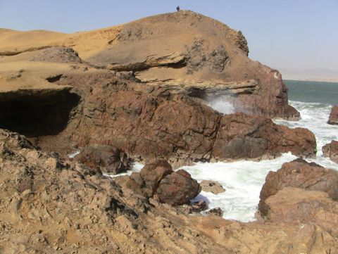


チチカカ湖
シルスタニ
なぜ、根元より上のほうが太い塔を建てたのでしょうか。

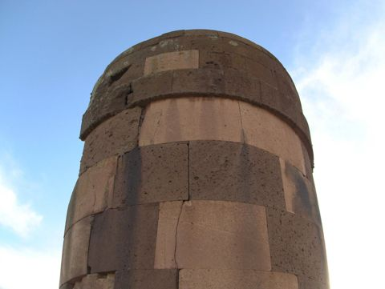


プーノとチチカカ湖
アンデスの神話では、太陽そのものがこの湖から生まれたといいます。


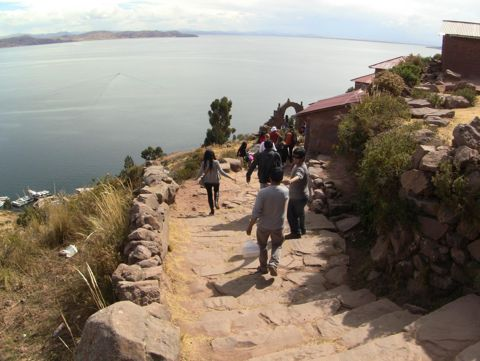

チュクイト：インカ・ウヨ
チチカカ湖のそばの小さな石壁の囲いの中に、何十本もの石の男根が立っています。

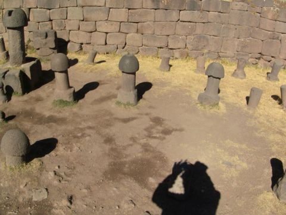


アラム・ムル（ハユ・マルカ）
赤い岩壁に、一辺およそ7メートルの完璧な扉が刻まれています。その奥に部屋はありません。


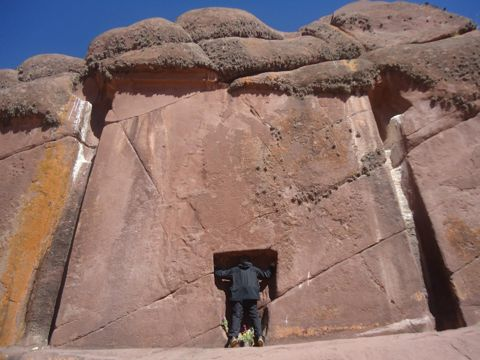


クスコと聖なる谷
クスコ
1650年と1950年の地震がクスコを襲ったとき、植民地時代の建物はひび割れたり倒壊したりしましたが、その下のインカの壁は持ちこたえました。


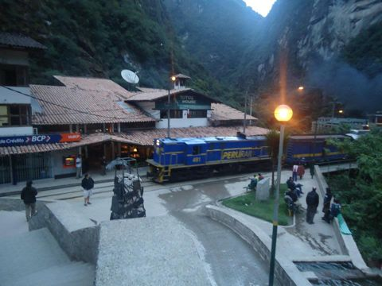


サクサイワマン
この城壁で最大の石は約120〜130トンと推定されることが多いです。


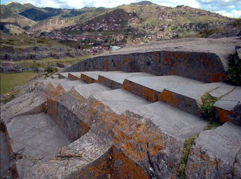

マチュ・ピチュ
スペイン人はマチュ・ピチュを見つけられませんでしたが、1911年にハイラム・ビンガムが訪れたとき、そこには地元の農民が暮らしていました。


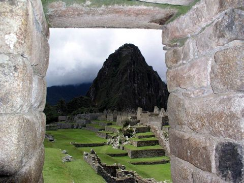


オリャンタイタンボ
川向こうの石切り場から運ぶ途中で、巨大なピンクの石が置き去りにされています。


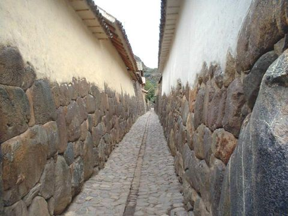


ピサックと聖なる谷
ピサックの上の崖には墓が無数に穿たれ、知られている中でも最大級のインカの墓地になっています。


ボリビア
ティワナクとプマ・プンク
プマ・プンクでは、平らな面と鋭い内角をもつ同じH字形の石材が、何度も何度も現れます。


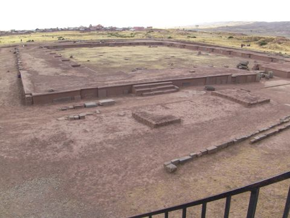


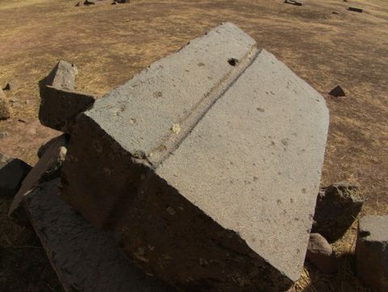


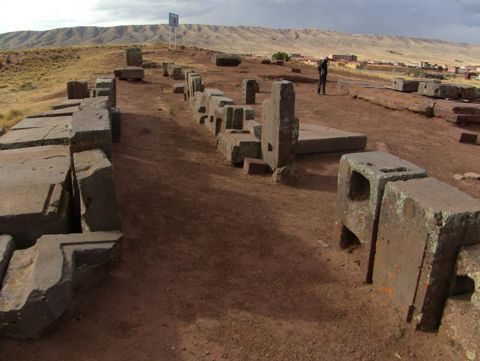


サマイパタの砦
長さ約220メートルの砂岩の尾根全体に、溝、座席、壁龕、動物の姿が彫られています。


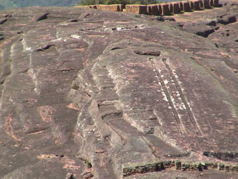


ウユニ塩湖
この塩原はあまりに平らなので、人工衛星の高度計の較正に使われています。


ストーリー
頭蓋骨は何を語るのか
頭蓋骨の側面にインクで MRI DB と書かれています。わずかな文字から、この頭蓋骨がどこから来て、その記録がどこにあるのかがわかるでしょうか。このページは、確認した資料でたどれる範囲まで、その手がかりを追います。
写真の頭蓋骨は人の遺骨です。このページでは、写真と展示ラベルから読み取れることと、公表された研究が述べることだけを伝えます。写真からは、故人の年齢、病気、出自はわかりません。
頭蓋骨の写真、ペルー 2014年


カイロ 2024：エジプトの似た長い頭
2024年2月15日、カイロのエジプト博物館で、Jani は頭頂部が後方へ大きく伸びた石の頭部像を撮影しました。形はペルーの頭蓋骨に似ていますが、写真は別の大陸で、ペルーの頭蓋骨の写真（2014年）より約 9 年後に撮られたものです。


ペルーとのつながりは見た目だけです。アマルナの頭部は彫刻で、ペルーの頭蓋骨は人の遺骨です。調査されたパラカスの資料では、長い頭は子どもの頃に形を整えた結果と解釈されています（研究の背景）。カイロの写真は 2024年、ペルーの写真は 2014年に撮影されました。これらのペアの AIイラストは石の都のページにあります：ペア 12 と ペア 13（カイロの石の顔とペルーの頭蓋骨）。
誰が 誰に教えたのか

ティワナクから植民地時代のクスコまで、石から石へと続く道筋。
1549年、シエサ・デ・レオンはティワナクで、インカがクスコの建物の手本をここから取ったのかもしれないと記しました。年代記は物語で答え、研究は計測と年代測定で答え、各幕は問いを次の石に渡します。この道は時間の層を進むものであり、2011年の旅の順ではなく、ある文化がそのまま別の文化になったと主張するものでもありません。
石の都の顔（AIイラスト · フィクション）
フィクション。想像上の石の都の AIイラスト。各ペアでは、まず Jani Korpi がペルーで撮影した写真を示し、次にその形をもとにした AIイラストを示します。石の都とその住人は創作です。
01 · プリズムを調整する光学職人

02 · 石材の荷が路地を通る

03 · 継ぎ目を確かめる石工の女性

人物の表情、肌の色、髪、日々の暮らしは、想像上の石の都のものです。いくつかの写真は同じ対象を異なる方向から写しています。
すべての言語のギャラリー
15の目的地があるギャラリー全体を、自分の言語で開く。